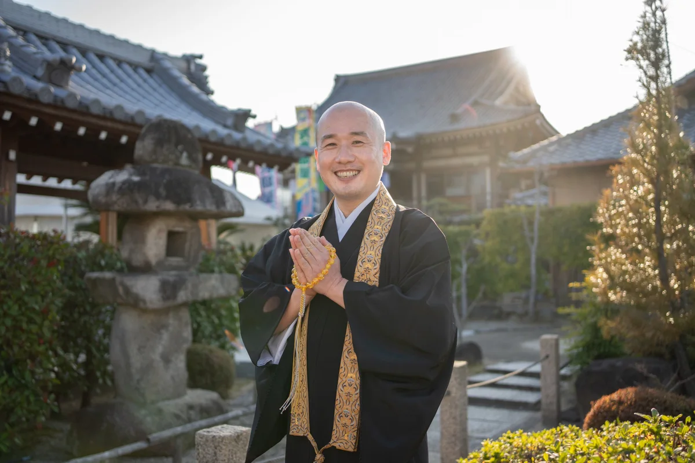

恵光寺の題字
いのち、ひびきあうお寺
人と人が心を通わせ、大切なことに気づけるお寺です。
住職のことば

ありのままの自分で、そっと立ち寄れる場所。
言葉にならない想いも、涙も、ひとりぼっちの気持ちも、ぜんぶそのまま受けとめる場所でありたいと願っています。
恵光寺は、あなたのいのちが仏さまのはたらきに触れて、静かに、あたたかく、ひびきあうお寺です。
恵光寺住職 本多 真成
ともに揺れ、そしてまた戻る
誰かの喜びに心がはずみ、誰かの涙に心がふるえる。恵光寺は、お互いが影響しあい、ともに喜び、ともに涙することを大切にしています。
相手の影響をうけ揺れることは、自分を見失うことではありません。揺れたあとは、また自己の状態に戻ってくる。お寺は、この「揺れて、戻る」往復を下支えする場所でありたいと考えています。
揺れる
相手の思いにふれて、ともに喜び、ともに涙する。
戻る
いつものありのままの自分にかえる。
揺れる身のままで
心が揺れることは、さとりから遠ざかることだと敬遠する考え方もあります。けれども私たちは、煩悩から離れることのできない身です。
み教えに生きるとは、教えに出会い、自分自身の姿が明らかになっていくことです。けれどもその姿は、決して立派なものではありません。できれば目をそらしたい姿でもあります。
その姿に気づくには、自分がどれほど揺れ動いているか、その振幅に気づくことが欠かせません。恵光寺の活動には、それぞれゆるやかな枠があります。その枠のなかで何を感じ、どう過ごすかは、一人ひとりにゆだねられています。同じ枠だからこそ、その日の自分の揺れが映し出されます。そしてその時間を、ひとりきりではなく、同じ場に集う人とともに過ごす。そのことを身をもって学ばせていただくことが、「生きる」ということではないでしょうか。恵光寺の活動やつながりは、この考えから生まれています。
活動とのつながり
揺れには、微細なものもあれば、大きなものもあります。そうした振幅をとおして、今自分が生きていることが実感されます。恵光寺の活動は、それぞれ揺れの幅がちがいます。心が静まっていく時間もあれば、誰かと大きく揺れあう時間もあります。その幅のなかで、いまのご自身に合う活動を見つけてご参加いただけたらと思います。
「お写経」
筆をとおして、今の自分の状態に向き合う時間。
開催：毎月はじめの水曜日
「読経の会」
声とからだをとおして、自分の「軸」をしなやかにする時間。
開催：2か月に1回
「編み物サークル ぬくい手（あったかい手）」
黙々と手作業をすすめながら、誰かに思いを届ける、手しごとの輪。
開催：毎月1回・木曜日 13:00〜15:00
「コールエコー」
恵光寺の仏教讃歌聖歌隊。声を合わせて歌い、ともにひびきあう時間。
開催：毎月第3土曜日 14:00〜15:30（8月はお休み、3月・11月は変則開催）
「人生会議」
言葉の向こう側に耳を澄ませ、気付きをうながす時間。
開催：2か月に1回・水曜日
「からふ会」（婦人会会員限定）
からだの不安を言葉にし、受けとめあう時間。
開催：年4回
恵光寺がサポートする社会活動
恵光寺は、毎年のご寄付を通して、2つの社会活動を応援しています。
京都自死・自殺相談センター Sotto
死にたい気持ちを抱えた方の声を聞き、ひとりぼっちにしない活動です。誰かの揺れにそっと寄り添う姿勢に、恵光寺も深く共感しています。
気候ネットワーク
気候変動の問題に、市民の立場から取り組む団体です。次の世代のいのちにもつながる、持続可能な社会に貢献したいと考えています。
お寺で使う電気へのこだわり
恵光寺は、TERA Energy（テラエナジー）の「再生可能エネルギー100%プラン」で電気を使っています。
このプランの電気は、太陽光などの再生可能エネルギーでつくられた電気だけが元になっています。火力発電や原子力発電の電気に証書を組み合わせて「実質ゼロ」とみなす電気とはちがい、発電のときにCO2を出さない、空気を汚さない電気です。原子力発電の電気も使っていません。
※再生可能エネルギー由来の電気に、その環境価値を証明する「非化石証書」を組み合わせて、CO2排出ゼロの電気としてお届けされています。
メディア掲載
新聞や雑誌で、恵光寺の取り組みをご紹介いただきました。
- 2026年11月15日東大阪新聞恵光寺に新しいアイテム加わる ― 参拝者のスマートフォンへ言葉を直接届ける（スマート法語）
- 2026年10月2日中外日報現代人に仏教との接点を ― 本願寺派恵光寺「スマート法語」導入
- 2026年8月月刊住職 8月号お寺も人生会議の実践 ― 終活イベントから人生会議へ
- 2026年5月10日河内新聞恵光寺主催『今こそ平和を考える』河内家菊水丸師匠 特別講演
- 2026年4月28日文化時報世界公演で平和知る ― 河内家菊水丸さんが講演
- 2026年4月22日中外日報無関心もたらす問題 深刻 ― 菊水丸氏、平和語る
- 2026年3月15日東大阪新聞恵光寺ちゃんこ交流会 ― 式秀部屋の力士と地域住民ふれあう
- 2025年12月9日文化時報終活 教えに根差して ― 恵光寺「人生会議」
- 2025年3月25日河内新聞恵光寺で心ひとつに ― 春の大阪場所 式秀部屋